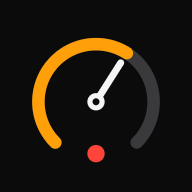

Camera is off
--
MAX--
AVG--
GPS--
Camera is off

Turn your iPhone into a motorcycle dashcam with a GPS speedometer burned into every video.
Set everything up before you ride. Never operate your phone while moving.
Tip: install the app first — tap Share › Add to Home Screen in Safari, then open it from the Home Screen.
No recordings yet.
To keep a clip in Photos: Save / Share › Save Video. GPX and SRT contain the GPS track synced to the video timeline.
SpeedoCam is a web app. iOS gives web apps less access than native apps; here is exactly what that means.
iOS stops the camera as soon as the screen locks, you switch apps, or Control Center/Siri/a call takes over. SpeedoCam saves the clip immediately and starts a new clip when you come back (if Auto-resume is on). Keep the screen on: the app requests a wake lock, and you can also set Settings › Display & Brightness › Auto-Lock › Never while riding.
Safari decides which camera modes a web page gets, and drawing + encoding 60 frames per second can drop frames on older iPhones or when the phone gets hot. Run Settings › Device test to measure what your iPhone actually delivers; the app falls back to the best supported mode automatically.
Clips are stored inside the app (IndexedDB), not in Photos. Use Save / Share › Save Video to copy a clip to Photos. Safari and the Home Screen app have separate storage. Deleting the app deletes its clips. Export important footage promptly.
Web apps receive about one GPS update per second, so the speed shown lags reality by roughly a second. Accuracy depends on sky view; under bridges, in tunnels or between tall buildings the speed is hidden ("--") rather than guessed.
Camera + GPS + video encoding is demanding. Use a mount with charging and avoid direct sun on the phone. iOS may stop the camera if the phone overheats; the clip recorded so far is kept. Ride display (moon button) blacks out the preview to save power — recording continues.
Set up the app while stationary. Do not interact with your phone while riding. Speed readings are for reference only; follow posted limits and your vehicle's speedometer.